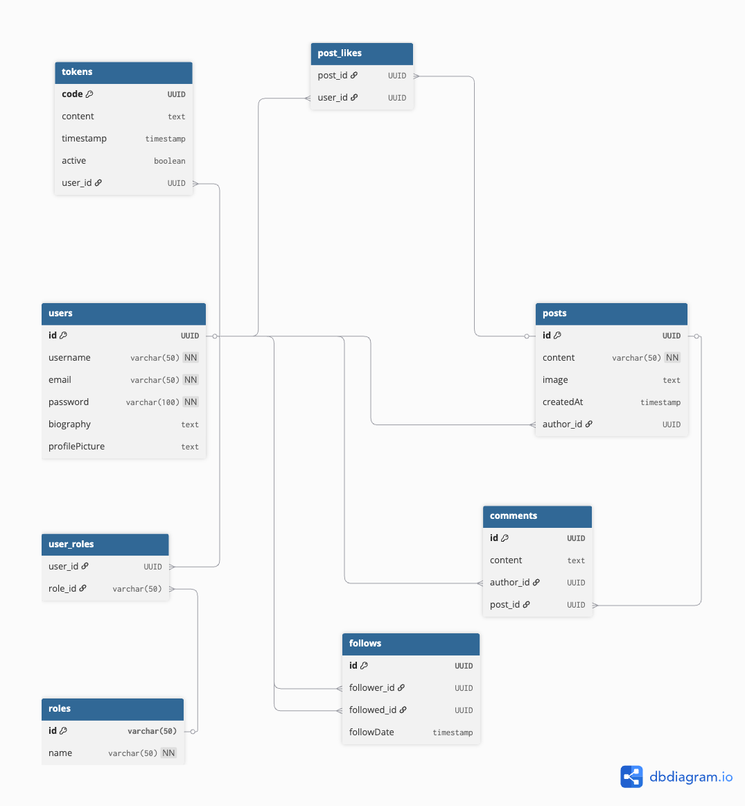

🧬 Modelo de Base de Datos - MiniTweet API
La base de datos de MiniTweet está diseñada bajo un enfoque n-tier, usando una arquitectura relacional con PostgreSQL como gestor.
Gracias a JPA (Java Persistence API), las entidades Java se mapean directamente a tablas en la base de datos.
🗃️ Entidades principales
| Entidad | Descripción breve |
|---|---|
User |
Representa a los usuarios del sistema |
Post |
Publicaciones de los usuarios |
Comment |
Comentarios en publicaciones |
Follow |
Relaciones de seguimiento entre usuarios |
Role |
Roles de usuario (ADMIN, USER, etc.) |
Token |
Tokens JWT activos para sesiones |
🔗 Diagrama de relaciones

🧠Cada relación está optimizada para el rendimiento y el control de acceso, incluyendo protecciones con anotaciones
@JsonIgnorepara evitar ciclos infinitos al serializar.
📋 Definiciones de entidades clave
👤 Usuario (User)
username,email,passwordroles(Muchos a Muchos conRole)posts(Uno a Muchos conPost)followers/following(Uno a Muchos conFollow)- Implementa
UserDetailspara compatibilidad con Spring Security
📝 Post (Post)
content,image,createdAtauthor(Muchos a Uno conUser)likedBy(Muchos a Muchos conUser)comments(Uno a Muchos conComment)
💬 Comentario (Comment)
contentauthor(Muchos a Uno conUser)post(Muchos a Uno conPost)
🔁 Seguimiento (Follow)
followeryfollowed(ambos ManyToOne conUser)followDate
🛡️ Rol (Role)
id,name- Se relaciona con
Userpara autorización
🔐 Token (Token)
code,content,active- Asociado a un
Userautenticado
🐘 Configuración de PostgreSQL
Para correr PostgreSQL localmente con Docker:
🧱 Docker Compose
# docker-compose.yml
version: '3.1'
services:
postgres:
image: postgres:15
restart: always
container_name: minitweet-postgres
ports:
- 5432:5432
environment:
POSTGRES_USER: postgres
POSTGRES_PASSWORD: admin
POSTGRES_DB: minitweet_db
volumes:
- pgdata:/var/lib/postgresql/data
volumes:
pgdata:
🏃‍♂️ Iniciar el contenedor
docker-compose up -d
La base de datos estará disponible en localhost:5432 con las credenciales proporcionadas.
⚙️ Configuración en Spring Boot
Asegúrate de tener las siguientes propiedades en tu archivo application.properties:
spring.datasource.url=jdbc:postgresql://localhost:5432/minitweet_db
spring.datasource.username=postgres
spring.datasource.password=admin
spring.jpa.hibernate.ddl-auto=update
spring.jpa.show-sql=true
Puedes cambiar estos valores según tu entorno o usar variables de entorno con application.yml o application-dev.properties.
🧪 Tips de desarrollo
- Usa herramientas como pgAdmin, DBeaver o TablePlus para visualizar tus datos.
- Evita exponer contraseñas o tokens directamente desde las entidades.
- Usa @JsonIgnore o @JsonView para controlar lo que envÃas en las respuestas.